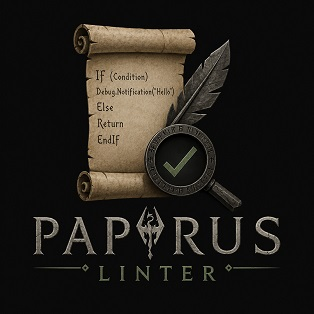

Test coverage
Line coverage per module and file, from the CI run behind release . Aggregated the same way as the project's release notes and pull request coverage comments, so it never drifts from what actually shipped.

Line coverage per module and file, from the CI run behind release . Aggregated the same way as the project's release notes and pull request coverage comments, so it never drifts from what actually shipped.